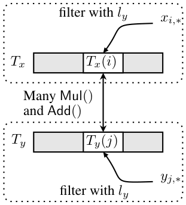
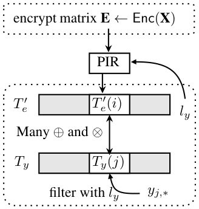

Exploiting Data Sparsity in Secure Cross-Platform Social Recommendation (面向跨平台社交推荐的安全稀疏矩阵乘法)
- 会议/期刊: NeurIPS 2021
- 作者与机构: Jamie Cui, Chaochao Chen, Lingjuan Lyu, Carl Yang, Li Wang（蚂蚁集团、浙江大学、Sony AI、Emory University）
- 推荐链路定位: 召回（矩阵分解式协同召回的训练阶段）
- 研究方向: 去偏公平、可信隐私与工业架构 / 社交与群组推荐
- 论文原文: arXiv:2202.07253v1
- 开源代码: microsoft/SealPIR（PIR 组件依赖；完整 S3Rec 暂未单独开源）
TL;DR (1分钟核心速览)
现实中的评分数据（评分平台 \(P_0\)）与社交关系（社交平台\(P_1\)）分属不同平台且高度稀疏敏感，现有隐私社交推荐方案 SeSoRec 靠泄露"两行/两列元素和"换效率、且把社交矩阵当稠密矩阵处理。本文以 Soreg 为目标模型，将梯度计算拆为\(P_0\)本地评分项与双方协作社交项，并把后者归约为两次安全矩阵乘法：对角矩阵（位置不敏感）用 Beaver 三元组稀疏化到\(O(km)\)，社交矩阵（位置+值均敏感）用 HE+PIR 盲化筛选降到\(O(\alpha km)\)。Epinions/LibraryThing 上五折 CV 的 RMSE 与明文基线完全一致，单轮通信量降低约 423×、耗时降低约 40×。
Background & Motivation (背景与核心矛盾)
- 主流范式: 社交推荐以矩阵分解为载体（代表 Soreg），在 BPR/MSE 目标上额外加入社交正则项 \(\sum s_{if}\lVert \mathbf{u}_i-\mathbf{u}_f\rVert^2\)，强制社交邻居表征靠近。
- 前人局限: 其一，SeSoRec 为提速主动泄露社交矩阵行/列元素和，在二元社交关系下几乎等同于泄露邻接信息，安全收益被架空；其二，SeSoRec 把 \(S\)视作稠密矩阵沿用 Beaver 三元组乘法，通信量\(O(km^2)\)，\(m\approx10^4\) 时单轮即达 7.4GB，百轮 ~1.5TB，工业不可用。
- 核心洞察 (Key Insight): 社交推荐数据有两个可利用的结构性质——(a) 社交正则项中的 \(D,E\)是对角阵，零元位置天然公开；(b)\(S\) 的社交密度极低（LibraryThing 仅 0.02%）。零元乘法占了全部计算量的绝对大头，只要能在"不泄露零元位置"的前提下跳过这些乘法，通信量就能按密度线性下降。
- 本文切入点: 把"稀疏性可见程度"形式化为两个安全等级，分别设计精确对齐的最小通信协议，而非在通用 MPC 上做算子近似。
Method (核心方法设计)
1. 整体框架 (Overall Architecture)
\(P_0\)持评分矩阵\(\mathbf{R}\)与物品侧参数\(\mathbf{V}\)，\(P_1\)持社交矩阵\(S\)，双方共享同一用户集。每轮迭代中，\(P_0\)先在本地计算评分项梯度并更新\(\mathbf{V}\)；对\(\mathbf{U}\)的更新则需联合计算社交项，双方调用 ST-MPC 协议：先由 MatrixMul 安全算出\(\frac{\gamma}{2}\mathbf{U}(\mathbf{D}^\top+\mathbf{E}^\top)\)与\(-\gamma\mathbf{U}\mathbf{S}^\top\)的秘密份额，加法聚合后把明文社交项重构给\(P_0\)，\(P_0\)再做本地梯度下降。由于\(S\)全程不离开\(P_1\)、\(\mathbf{U}\)全程不离开\(P_0\)，安全性完全由 ST-MPC 承担；而 ST-MPC 的代价几乎全部压在矩阵乘法上，这构成全文唯一的效率战场。
flowchart TD
A["P0: 评分矩阵 R, 隐因子 U,V"] --> C["本地计算评分项梯度"]
B["P1: 稀疏社交矩阵 S"] --> D["ST-MPC: MatrixMul(γU/2, D^T+E^T) 位置不敏感"]
A --> E["ST-MPC: MatrixMul(-γU, S^T) 位置+值敏感 → HE+PIR 盲筛选"]
B --> E
D --> F["秘密份额相加并重构社交项给 P0"]
E --> F
C --> G["P0 本地更新 U, V"]
F --> G
2. 关键设计拆解 (Key Designs)
- 不敏感稀疏：分箱对齐 + 三元组裁剪：\(D,E\)为对角阵，\(P_1\)可公开零元位置。双方把\(\mathbf{X}\)的每行、\(\mathbf{Y}\)的每列按非零位置装入对齐的桶\(T_x(i)\subseteq \mathbf{x}_{i,*}\)、\(T_y(j)\subseteq \mathbf{y}_{*,j}\)，只对桶内元素做 Beaver 内积。零乘被彻底裁掉，三元组消耗从\(km^2\)降到\(k\cdot nnz(\mathbf{Y})\)，对角情形\(nnz=m\)即\(O(km)\)。
- 敏感稀疏：HE+PIR 的盲化筛选：此时 \(P_0\)无权知道\(P_1\)的非零位置，无法自行建桶。做法是\(P_0\)用 Paillier 加密整个\(\mathbf{X}\)得\(E\)作为 PIR 数据库，\(P_1\)依据自己的位置向量\(l_y\)生成一批 PIR 查询取回仅自己需要的加密元素，构成过滤后的表\(T'_e\)；随后\(P_1\)在同态域上做\(\beta_{i,j}=\bigoplus_{\mathbf{v}\in T'_e(i),\mathbf{u}\in T_y(j)} \mathbf{v}\otimes\mathbf{u}\)，加随机掩码\(g_{i,j}\)后交\(P_0\)解密，双方分别持有份额。明文乘法次数从\(m^2\)降为\(\alpha m^2\)，通信\(O(\alpha km)\)。
- 训练目标、泄露预算与推理开销: 总损失即 Soreg 的 MSE+社交正则（式 1），无负采样（评分预测任务）。\(\mathbf{V}\)与评分项均在\(P_0\)本地闭式更新，在线推理只发生在\(P_0\)内部，零额外密码学开销。关键的安全论证是：\(P_0\)每轮只见到一个线性组合\(\gamma\mathbf{U}\mathbf{S}^\top\)的明文，而迭代轮数\(T\)远小于用户数\(n\)，方程组欠定、有无穷多解，故无法反解\(S\)；协议要求双方事前约定\(T<n\)。

Experimental Setup & Evaluation Protocol (实验设置与评估协议)
- 数据集与预处理: 沿用 SeSoRec 的过滤口径，移除交互数少于 15 的用户与物品：
| 数据集 | #Users | #Items | #Interactions | 评分密度 | 社交关系数 | 社交密度 |
|---|---|---|---|---|---|---|
| Epinions | 11,500 | 7,596 | 283,319 | 0.32% | 275,117 | 0.21% |
| LibraryThing | 15,039 | 14,957 | 529,992 | 0.24% | 44,710 | 0.02% |
- 数据划分与防穿越: 五折交叉验证（非时间切分），论文未显式讨论评分时间戳穿越问题。
- 排名评测协议: 不使用 Top-N 排名，采用评分预测的 RMSE（评分域 \([0,5]\)）；效率侧报告单/总训练时长（秒）与两方通信量（GB）。无负采样环节。
- 对比基线与超参设置: MF（仅用 \(P_0\)评分，等价\(\gamma=0\)）、Soreg（明文集中式，无隐私）、SeSoRec（SOTA 隐私方案）。隐因子维度\(k=10\)（另测 15/20），学习率与\(\lambda\)在\(\{10^{-3},\dots,10^{1}\}\) 网格调优；密码学参数为 128-bit 计算安全 + 40-bit 统计安全，64-bit 秘密共享，本地网络 ~3ms 延迟。
Key Experimental Results (实验关键数据)
1. 主实验对比 (Main Results)
| 模型 | Epinions RMSE | Epinions 总时间(s) | Epinions 通信(GB) | Lthing RMSE | Lthing 总时间(s) | Lthing 通信(GB) |
|---|---|---|---|---|---|---|
| MF | 1.193 | 3.85 | — | 0.927 | 9.60 | — |
| Soreg (明文) | 1.062 | 40.50 | — | 0.908 | 57.76 | — |
| SeSoRec | 1.062 | 7,799 | 798.6 | 0.908 | 16,084 | 1,365 |
| S3Rec (本文) | 1.062 | 419.9 | 3.552 | 0.908 | 262.1 | 2.201 |
| Improv. vs SeSoRec | — | 18.57× | 224.8× | — | 61.37× | 620.2× |
2. 消融/敏感性分析 (Ablation & Sensitivity)
| 分析维度 | 设置 | SeSoRec | S3Rec | 相对收益 |
|---|---|---|---|---|
| 社交采样率 (Epinions 时间) | 0.4 / 0.6 / 0.8 | 7,799（恒定） | 366.3 / 381.2 / 401.8 | 21.3× / 20.5× / 19.4× |
| 社交采样率 (Lthing 通信) | 0.4 / 0.6 / 0.8 | 1,366（恒定） | 1.62 / 1.82 / 2.01 | 843× / 751× / 680× |
| 隐因子维度 \(k\)(Epinions 通信) | 10 / 15 / 20 | 798.6 / 1,198 / 1,597 | 3.552 / 3.552 / 3.552 | 恒定不随\(k\) 增长 |
| 社交项离线开销 | Epinions | 7,271 s | 10.86 s | 离线成本几乎归零 |
3. 关键实验发现 (Key Findings)
- 精度零损失：S3Rec 与明文 Soreg、SeSoRec 的 RMSE 逐位相同（1.062 / 0.908），说明密码学协议是"精确计算"而非近似近似（对比之下 NN-based MPC 方案常因非线性激活近似掉点），隐私成本完全体现在时间而非精度上。而引入社交信息本身带来 MF→Soreg 的 1.193→1.062（Epinions，10.7% 降幅）与 0.927→0.908（Lthing），验证跨平台社交迁移的价值。
- 稀疏性红利随密度线性兑现：SeSoRec 的时间与通信对社交采样率完全不敏感（恒为 7,799s / 798GB），而 S3Rec 随采样率下降近似线性收缩，Lthing（社交密度仅 0.02%）上通信降幅达 843×，远高于 Epinions（0.21%）的 255×——收益与 \(\alpha\) 成反比，证明协议真正跳过了零元而非仅仅换了个乘法实现。
- 对 \(k\)的通信规模不敏感：\(k\) 从 10 增到 20 时，SeSoRec 通信从 798.6GB 膨胀到 1,597GB（近 2×），S3Rec 恒为 3.552GB，这一"通信量与嵌入维度解耦"的性质对大模型化召回极具工程吸引力。
Highlights & Limitations (亮点、对比与审稿批判)
- 与代表作对比 (vs. Prior Work): 与 SeSoRec 的本质差异不在模型而在威胁模型——SeSoRec 交出行/列元素和换取效率，本文用 PIR 让 \(P_1\) 盲取所需密文，杜绝该泄露；与 ROOM 等通用稀疏安全计算框架相比，本文不依赖预生成相关随机性，且同时支持"位置公开"与"位置保密"两档，可按矩阵类型分别选用，因此更贴合社交推荐的异构稀疏结构。
- 可迁移亮点: (a) "按稀疏性敏感等级分档设计协议"的思路可迁移到联邦/隐私跨域推荐中的 item embedding 传输、跨域映射矩阵对齐等场景；(b) 把对角正则矩阵单独抽出走廉价通道（\(O(km)\)）这一工程 trick，对任何带度归一化/对角拉普拉斯项的安全图推荐都适用。
- 审稿级局限批判: 其一，评估协议偏弱——仅用 RMSE 五折 CV，未做 Top-N 排名（Recall/NDCG）、无时间切分，也未报告显著性检验，且 \(k=10\)过小、缺乏现代神经社交推荐基线（如 GraphRec/DiffNet），"精度一致"只在极简 MF 家族内成立；其二，安全模型与扩展性受限：仅抗半诚实敌手、需双方共享用户集、每轮向\(P_0\)明文泄露社交项并依赖\(T<n\) 这一约定来保证不可反解，属于"弱化版"安全而非完整 MPC 训练；此外 HallG 等第三方库/网络延迟的实测开销（~3ms LAN）在广域网下会被显著放大。
Rating (四维评分)
- 方法创新性 (Novelty): ⭐⭐⭐⭐ （将稀疏可见性形式化为两档安全等级并各配精确协议，\(O(km^2)\to O(\alpha km)\) 的复杂度改进扎实且证明完备，但模型侧无新意，创新集中在密码学工程）
- 评估协议与实验扎实度 (Protocol & Experiments): ⭐⭐⭐ （效率评估充分且有 \(k\) 与稀疏率双维度敏感性分析，但仅有 RMSE 五折 CV、无 Top-N/时间切分/显著性检验，基线偏旧）
- 写作与数学规范度 (Clarity & Rigor): ⭐⭐⭐⭐ （协议伪代码与安全引理清晰、复杂度推导明确，安全论证靠"欠定方程组"直观说明而非形式化泄露界，稍显薄弱）
- 工业落地与复现价值 (Industrial & Practical Value): ⭐⭐⭐⭐ （通信量与原模型精度不变使其具备真实跨企业协作可行性，但依赖 PIR/HE 库、需 \(T<n\) 的运营约束，完整系统未开源）